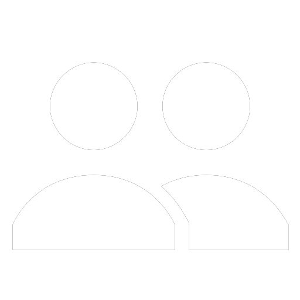

Siga o que for de seu interesse.
Saiba sobre o que as pessoas estão falando.
Participe da conversa.
Saiba o que está acontecendo no mundo agora
Inscreva-se no Twitter hoje mesmo.
Inscrever-se
Entrar